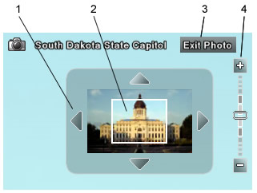
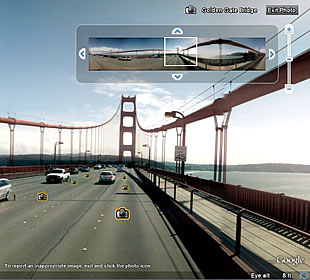
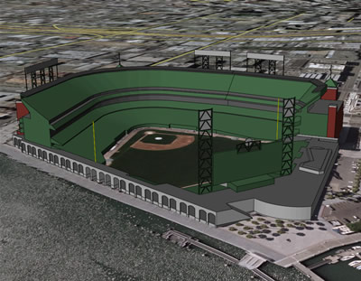

This section covers how to set and use the map features, which include photos, roads, terrain, borders. buildings, and models. Topics include:
You can fly into and navigate photos, such as high resolution images that appear in the Gigapxl layer. To do this, do one of the following:

Gigapxl icon
Note - Gigapxl photos are not available for all locations. If you do not see Gigapxl icons in the 3D viewer, try navigating to another area and zoom in.
Use the following controls to zoom or move in the photo. Note that these controls only
appear when you mouse over the top right corner of the 3D viewer.

You can add photos to Google Earth. Your photos are not viewable by other users of Google Earth unless you choose to share them (learn more).
Note - This feature is distinct from adding image overlays. When you add a photo, it is located in 3D and does not appear as a ground level image overlay.
To add photos:
Note - Using Panoramio, you can also share your photos with other Google Earth users. Learn more.
The road layer displays road map information for the viewing area, including major highways, county roads, and streets. This option is available in the Layers folder. In the Layers folder, you can expand the Roads folder and control the display for U.S., Canadian, and many international roads.
While road information for a given view is always available, it only displays in the
viewer when a logical distance is reached. For example, if you are looking at a very
large region, such as the southern area of a state, you see only major highways. When you
zoom in to a more confined region, you see labels for those highways, as well as smaller
highways and roads. The figure below shows only the major highways for the states in
view.

Tip: If you cannot see the label for a highway or a road, zoom in or reposition the viewer until the label appears. Typically, you need to zoom in to see the label.
In certain areas, you can view and navigate street-level imagery in much the same way you can in Google Maps. To do this:
 appear at locations with
available views.
appear at locations with
available views.

Street View on the Golden Gate Bridge.
Tip - You can right click (Ctrl + click on the Mac) any photo icon to save that Street View to the Places panel.
The terrain layer shows 3D elevation of your current view. Elevation is limited to natural geographic features, like mountains and canyons, and does not apply to buildings. Turn this feature on to get an even clearer image of your favorite ski resort or canyon trail. You can turn terrain on by selecting on the Terrain item in the Layers panel.
You can also adjust the appearance of the terrain if you would like the elevation to appear more pronounced in your views. To do this, do the following:
Windows and Linux: Tools > Options > 3D View. Modify the Elevation Exaggeration value.
Mac: Google Earth > Preferences > 3D View. Modify the Elevation Exaggeration value.
The default value is set to 1, but you can set it to any value from 1 to 3, including decimal points. A common setting is 1.5, which achieves an obvious yet natural elevation appearance.
You can turn on border information by checking the Borders folder in the Layers tab. The Border check box turns on all possible borders, while you can expand the Borders folder to control display of the many kinds of borders, such as:
When turned on, border information for a given view is always available. However, as with road data, it is displayed in the viewer when a logical distance is reached. For example, if you are looking at a very large region, you see only major boundaries. When you zoom in to a more confined region, you might see state or county labels depending upon your viewing elevation.
Google Earth can display both simple and photo-realistic 3D buildings in many areas. To view these:
Once you display 3D buildings, you can also do the following:
Tip - Some Google SketchUp models do not appear correctly in Google Earth until you turn off the 3D buildings layer. For more information, see Viewing 3D Buildings.
You can easily view Google SketchUp 3D models in Google Earth. To do this:
You can also place and create 3D models in Google Earth. For additional information, see Using Google SketchUp with Google Earth.

A Google SketchUp model of AT&T Park in San Francisco
Tip - You can also view available 3D models using the 3D Model network link.

©2010 Google - Privacy Policy - Terms and Conditions - About Google
Updated on